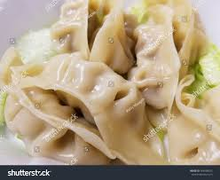
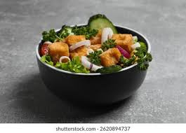
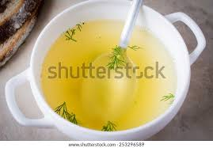

Healthy & Light Options
This page is for diners who want to eat well without compromising flavor. Restaurants and dishes are tagged vegetarian, vegan, steamed, low-oil, gluten-free, or low-calorie—so you can find the healthiest versions of Asian cuisine nearby.
Each item shows nutritional or dietary labels and an appealing visual. Descriptions include key ingredients, and restaurants focused on balanced menus are highlighted first.
Whether you’re reducing fried food, avoiding gluten, or just want something lighter today, you’ll enjoy flavorful food aligned with your goals—without digging through full menus.
Healthy picks


